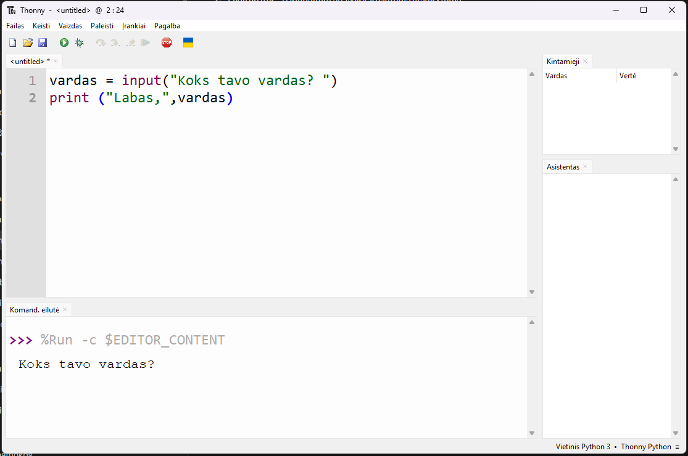
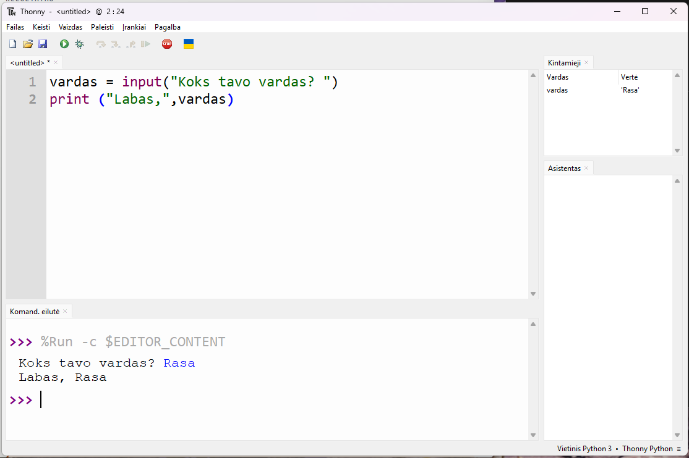
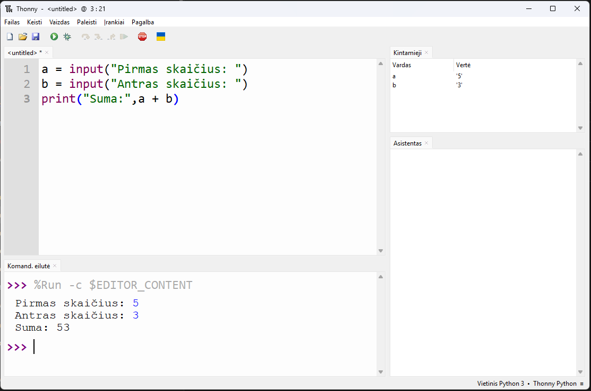
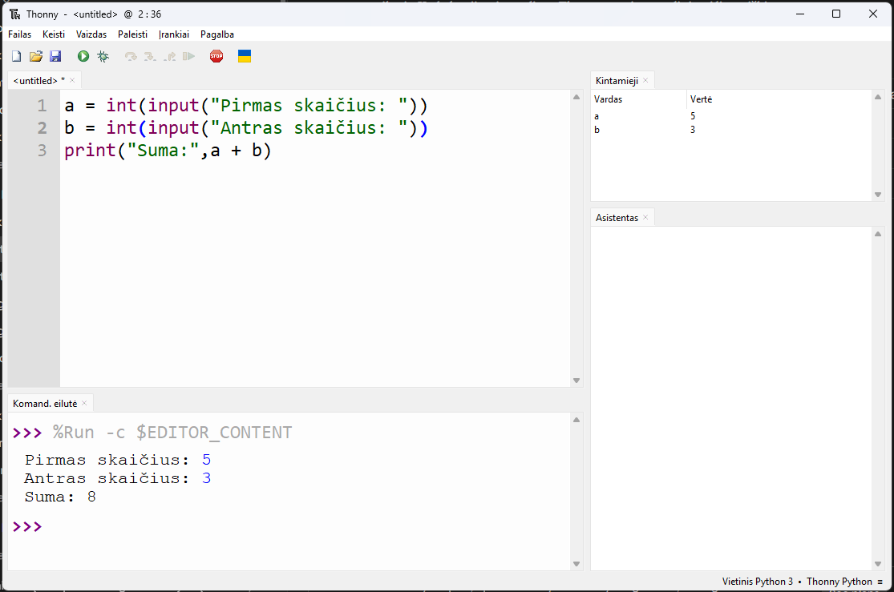
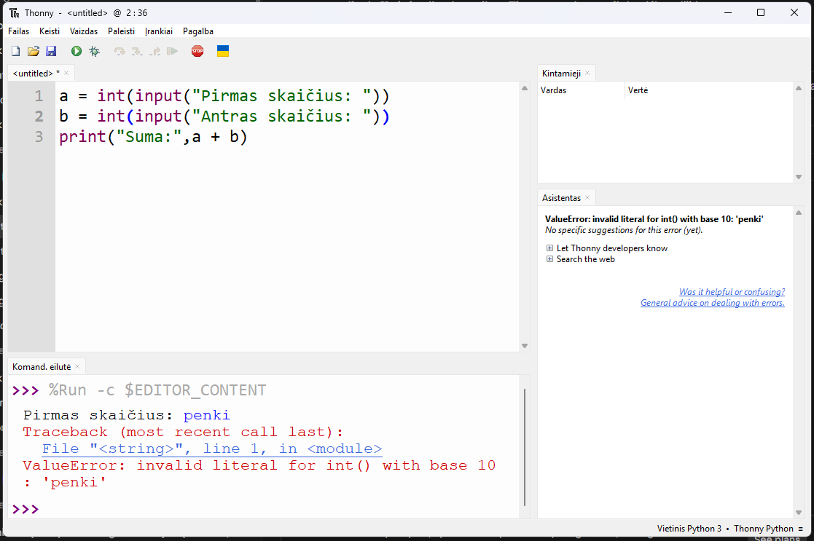

2 pamoka. Duomenų įvedimas: input()
Šioje pamokoje tavo programos pradės klausti: vartotojas įves duomenis, o programa su jais skaičiuos. Viską gali atlikti savarankiškai: skaityk iš eilės, kiekvieną pavyzdį surink pats ir paleisk.
Ko išmoksi
- paklausti vartotojo duomenų komanda
input(); - atskirti tekstą nuo skaičiaus ir suprasti, kodėl
"5" + "3"yra53; - paversti įvestą tekstą skaičiumi komandomis
int()irfloat(); - blokinę schemą su įvedimo bloku užrašyti Python programa;
- suapvalinti rezultatą komanda
round(); - atpažinti klaidas
ValueErrorirTypeError.
Kodo nekopijuok – surink jį klaviatūra pats. Kiekvieną programą paleisk bent du kartus su skirtingais duomenimis.
1. Kodėl reikia įvedimo
Praėjusią pamoką parašei programą, kuri skaičiuoja stačiakampio plotą:
ilgis = 8
plotis = 5
plotas = ilgis * plotis
print("Plotas:", plotas)Ji veikia, bet moka skaičiuoti tik vieno stačiakampio plotą. Norėdamas kito, turi atverti programą ir pakeisti skaičius kode. Žmogus, kuris nemoka programuoti, tokia programa naudotis negalėtų.
Blokinėse schemose šią problemą sprendei duomenų įvedimo bloku (lygiagretainiu): algoritmas pirmiausia paprašo duomenų, o tada su jais dirba. Python kalboje įvedimo bloką atitinka komanda input().
| Blokinėje schemoje | Python kalboje | Kada mokėmės |
|---|---|---|
| Duomenų išvedimas (lygiagretainis) | print() | 1 pamoką |
| Veiksmas, priskyrimas (stačiakampis) | = ir aritmetiniai veiksmai | 1 pamoką |
| Duomenų įvedimas (lygiagretainis) | input() | Šią pamoką |
| Sąlyga (rombas) | if | Kitą pamoką |
2. Komanda input()
Komanda input() sustabdo programą, palaukia, kol vartotojas ką nors surinks klaviatūra ir paspaus Enter, o tada surinktą tekstą perduoda programai.
Parašyk ir paleisk
- Atidaryk Thonny, sukurk naują failą (Ctrl+N) ir įrašyk jį savo aplanke
pythonvarduivedimas.py. - Redaktoriuje surink:
vardas = input("Koks tavo vardas? ") print("Labas,", vardas) - Paspausk F5 (meniu – ). Komandų eilutėje atsiras klausimas, o programa sustos ir lauks.
- Spustelėk pele komandų eilutėje, surink savo vardą ir paspausk Enter.

Koks tavo vardas? Rasa
Labas, RasaŠios pamokos rezultatuose paryškintas tekstas yra tai, ką klaviatūra surinko vartotojas. Thonny jį rodo kita spalva.

Paleisk programą dar kartą ir įvesk kitą vardą. Kodo nekeitei, o rezultatas kitas – programa tapo universali.
Kaip sudaryta komanda
vardas = input("Koks tavo vardas? ")| Dalis | Ką reiškia |
|---|---|
input | Komandos vardas. Rašomas tik mažosiomis raidėmis |
"Koks tavo vardas? " | Klausimas, kurį pamatys vartotojas. Rašomas kabutėse, nes tai tekstas |
vardas = | Kintamasis, kuriame programa įsimena tai, ką vartotojas įvedė |
Klausimo gale, prieš uždarančias kabutes, palik tarpą: "Koks tavo vardas? ". Be jo atsakymas prilips prie klausimo: Koks tavo vardas?Rasa.
Jei įvestos reikšmės nepriskirsi kintamajam, ji dings. Eilutė input("Koks tavo vardas? ") be vardas = paklaus, bet atsakymo neįsimins.
Kol programa laukia įvedimo, ji dar nebaigta. Jei nori ją nutraukti nieko neįvedęs, spausk raudoną mygtuką STOP (Ctrl+F2).
Papildyk programą: tegul ji dar paklausia, kokiame mieste gyveni, ir išveda, pavyzdžiui, Rasa gyvena mieste Kaunas.
3. Įvesta reikšmė yra tekstas
Pabandykime sudėti du skaičius. Sukurk failą suma.py:
a = input("Pirmas skaičius: ")
b = input("Antras skaičius: ")
print("Suma:", a + b)Paleisk ir įvesk 5 ir 3.
RezultatasPirmas skaičius: 5
Antras skaičius: 3
Suma: 53Gavome 53, o ne 8. Programa nesuklydo – ji padarė tiksliai tai, kas parašyta. Priežastis:
Komanda input() programai visada perduoda tekstą, net jei vartotojas surinko skaitmenis.
Pažiūrėk į langelį dešinėje: reikšmės parašytos kabutėse – '5' ir '3'. Kabutės rodo, kad tai tekstas, o ne skaičius.

Kiekviena reikšmė Python kalboje turi tipą. Kol kas užtenka trijų:
| Tipas | Python vadina | Pavyzdžiai | Langelyje Kintamieji |
|---|---|---|---|
| Tekstas | str | "Rasa", "9a", "5" | kabutėse: '5' |
| Sveikasis skaičius | int | 5, -12, 2026 | be kabučių: 5 |
| Trupmeninis skaičius | float | 3.5, 0.25, 4.0 | su tašku: 3.5 |
Tas pats ženklas su tekstu ir su skaičiais elgiasi skirtingai:
| Veiksmas | Rezultatas | Kodėl |
|---|---|---|
5 + 3 | 8 | Skaičius sudeda |
"5" + "3" | "53" | Tekstus sujungia vieną po kito |
"La" + "bas" | "Labas" | Tekstus sujungia vieną po kito |
"5" * 3 | "555" | Tekstą pakartoja 3 kartus |
Komandų eilutėje prie >>> išbandyk: "12" + "34", tada 12 + 34. Palygink rezultatus.
4. Tekstą verčiame skaičiumi: int() ir float()
Kad programa galėtų skaičiuoti, įvestą tekstą reikia paversti skaičiumi. Tam yra dvi komandos:
| Komanda | Ką daro | Pavyzdys | Rezultatas |
|---|---|---|---|
int() | Tekstą paverčia sveikuoju skaičiumi | int("15") | 15 |
float() | Tekstą paverčia trupmeniniu skaičiumi | float("3.5") | 3.5 |
Galima tai padaryti dviem žingsniais:
tekstas = input("Kiek tau metų? ")
amzius = int(tekstas)Dažniausiai abu žingsniai rašomi vienoje eilutėje – komanda input() įdedama į komandos int() skliaustus:
amzius = int(input("Kiek tau metų? "))Tokią eilutę skaityk iš vidaus į išorę: pirma input() paklausia ir gauna tekstą, tada int() jį paverčia skaičiumi, galiausiai skaičius priskiriamas kintamajam amzius.
Eilutės gale yra du uždarantys skliaustai: vienas užbaigia input(, kitas – int(. Kiek skliaustų atidarei, tiek turi ir uždaryti.
Pataisyta sumos programa
Pataisyk failą suma.py:
a = int(input("Pirmas skaičius: "))
b = int(input("Antras skaičius: "))
print("Suma:", a + b)Pirmas skaičius: 5
Antras skaičius: 3
Suma: 8
Kurią komandą rinktis
| Ko klausi | Rašyk | Kodėl |
|---|---|---|
| Vardo, miesto, klasės | input("...") | Tai tekstas, versti nereikia |
| Amžiaus, mokinių skaičiaus, metų | int(input("...")) | Skaičiuojama vienetais, trupmenų nebūna |
| Kainos, ūgio, atstumo, temperatūros | float(input("...")) | Reikšmė gali būti su trupmenine dalimi |
Trupmeninį skaičių vartotojas turi įvesti su tašku: 3.5, o ne 3,5. Komandai float() tinka ir sveikasis skaičius: įvedus 8, programa gaus 8.0.
Parašyk programą, kuri paklausia, kiek tau metų, ir išveda, kiek metų tau bus po 10 metų.
5. Nuo blokinės schemos prie programos
Dabar moki užrašyti visus tiesinio algoritmo blokus. Paimkime schemą, kuri skaičiuoja stačiakampio plotą su vartotojo įvestais duomenimis:
Kiekvienas schemos blokas virsta programos eilute. Sukurk failą plotas.py:
# Programa skaičiuoja stačiakampio plotą
ilgis = float(input("Įvesk ilgį: "))
plotis = float(input("Įvesk plotį: "))
plotas = ilgis * plotis
print("Plotas:", plotas)| Schemos blokas | Programos eilutė |
|---|---|
| Pradžia | Atskiros komandos nėra |
| Įvesti ilgis, plotis | Dvi eilutės su input() – kiekvienam kintamajam atskira |
| plotas = ilgis * plotis | plotas = ilgis * plotis |
| Išvesti plotas | print("Plotas:", plotas) |
| Pabaiga | Atskiros komandos nėra |
Įvesk ilgį: 2.5
Įvesk plotį: 4
Plotas: 10.0Rezultatas 10.0 su tašku, nes skaičiuota su trupmeniniais skaičiais (float).
Dauguma šios pamokos programų turi tris dalis ta pačia tvarka: 1) įvedimas – paklausk duomenų, 2) skaičiavimas – apskaičiuok, 3) išvedimas – parodyk rezultatą. Prieš rašydamas programą, pagalvok, kas bus kiekvienoje dalyje.
6. Apvalinimas: round()
Skaičiuojant su trupmenomis, rezultatas kartais būna ilgas. Sukurk failą kaina.py:
kaina = float(input("Prekės kaina: "))
kiekis = int(input("Kiekis: "))
suma = kaina * kiekis
print("Mokėti:", suma, "Eur")Prekės kaina: 0.1
Kiekis: 3
Mokėti: 0.30000000000000004 EurTai ne tavo klaida: kompiuteris trupmeninius skaičius saugo apytiksliai, todėl gale kartais atsiranda „uodega“. Ją pašalina komanda round(), kuri skaičių suapvalina:
| Užrašas | Ką daro | Rezultatas |
|---|---|---|
round(3.14159, 2) | Suapvalina iki 2 skaitmenų po kablelio | 3.14 |
round(10 / 3, 1) | Suapvalina iki 1 skaitmens po kablelio | 3.3 |
round(3.7) | Suapvalina iki sveikojo skaičiaus | 4 |
Pakeisk paskutinę programos eilutę:
print("Mokėti:", round(suma, 2), "Eur")Prekės kaina: 0.1
Kiekis: 3
Mokėti: 0.3 EurPinigų sumas visada apvalink iki 2 skaitmenų po kablelio.
7. Naujos klaidos
Su įvedimu atsiranda naujos rūšies klaida: programa parašyta teisingai, bet vartotojas įveda netinkamus duomenis. Paleisk suma.py ir vietoj skaičiaus įvesk žodį penki.

ValueError: komanda int() negali žodžio „penki“ paversti skaičiumi.Klaidos pranešimą skaityk taip pat, kaip praėjusią pamoką: rask eilutės numerį (line) ir perskaityk paskutinę eilutę.
| Kas nutiko | Python pranešimas | Kas negerai | Kaip taisyti |
|---|---|---|---|
Programa laukia sveikojo skaičiaus, įvesta penki | ValueError: invalid literal for int() with base 10: 'penki' | Žodžio negalima paversti skaičiumi | Paleisk iš naujo ir įvesk skaitmenimis: 5 |
Programa laukia sveikojo skaičiaus, įvesta 3.5 | ValueError: invalid literal for int() with base 10: '3.5' | int() nepriima trupmenų | Programoje vietoj int() rašyk float() |
Įvesta 3,5 su kableliu | ValueError: could not convert string to float: '3,5' | Trupmena įvesta su kableliu | Įvesk su tašku: 3.5 |
amzius = input("Metai: ")print(amzius + 1) | TypeError: can only concatenate str (not "int") to str | Prie teksto bandoma pridėti skaičių – pamiršta int() | amzius = int(input("Metai: ")) |
a = int(input("Skaičius: ") | SyntaxError: '(' was never closed | Trūksta antro uždarančio skliausto | a = int(input("Skaičius: ")) |
Du nauji klaidų pavadinimai:
ValueError– netinkama reikšmė: tekstas, kurio negalima paversti skaičiumi.TypeError– netinkamas tipas: veiksmas atliekamas su tekstu ir skaičiumi kartu.
Pavojingiausia klaida ta, apie kurią Python nepraneša: pamiršus int(), suma 5 + 3 tampa 53, ir programa veikia toliau. Todėl kiekvieną programą patikrink su skaičiais, kurių atsakymą žinai.
Paleisk plotas.py ir ilgį įvesk su kableliu: 2,5. Perskaityk pranešimą, rask jame eilutės numerį ir klaidos pavadinimą. Tada paleisk dar kartą ir įvesk teisingai.
8. Praktinės užduotys
Kiekvieną užduotį atlik atskirame faile ir įrašyk aplanke python. A lygio užduotys privalomos visiems. B ir C lygio užduotis rinkis, jei A lygis pavyko.
Kiekvienos programos pirmoje eilutėje komentaru parašyk savo vardą ir ką programa daro. Kiekvieną programą išbandyk su pavyzdyje nurodytais duomenimis – turi gauti tokį patį rezultatą.
A lygis: pagrindai
A1 užduotis. Pasisveikinimas · pasisveikinimas.py
Programa paklausia vardo ir klasės, tada pasisveikina:
Koks tavo vardas? Rasa
Kurioje klasėje mokaisi? 9a
Labas, Rasa! Tu mokaisi 9a klasėje.A2 užduotis. Amžius · amzius.py
Programa paklausia, kuriais metais gimei, ir apskaičiuoja, kiek metų tau sukanka 2026 metais:
Kuriais metais gimei? 2011
2026 metais tau sukanka 15 metųA3 užduotis. Stačiakampis · staciakampis2.py
Programa paklausia stačiakampio ilgio ir pločio (sveikieji skaičiai), apskaičiuoja ir išveda perimetrą ir plotą:
Įvesk ilgį: 8
Įvesk plotį: 5
Perimetras: 26
Plotas: 40Paleisk dar kartą su 12 ir 7. Turi gauti 38 ir 84.
B lygis: įtvirtinimas
B4 užduotis. Klaidų medžioklė · klaidos2.py
Šioje programoje yra 4 klaidos. Surink ją tiksliai tokią, paleisk ir taisyk po vieną klaidą. Įvedus Rasa ir 15, programa turi išvesti Rasa po metų tau bus 16.
vardas = input("Koks tavo vardas? )
amzius = Input("Kiek tau metų? ")
po_metu = amzius + 1
print(vardas, "po metų tau bus" po_metu)Rodyti atsakymą
1 eilutė: neuždarytos kabutės. 2 eilutė: Input parašyta didžiąja raide ir trūksta int() – be jos 3 eilutėje gausi TypeError. 4 eilutė: trūksta kablelio prieš po_metu.
vardas = input("Koks tavo vardas? ")
amzius = int(input("Kiek tau metų? "))
po_metu = amzius + 1
print(vardas, "po metų tau bus", po_metu)B5 užduotis. Spėk rezultatą · spejimas2.py
Nepaleidęs programos, ant popieriaus užsirašyk, ką ji išves, jei vartotojas įves 7. Tada surink, paleisk ir palygink.
a = input("Įvesk skaičių: ")
b = int(a)
print(a + a)
print(b + b)
print(a * 3)Rodyti atsakymą
Programa išves 77, 14 ir 777. Kintamasis a yra tekstas "7": sudedami tekstai sujungiami, o dauginant tekstas pakartojamas. Kintamasis b yra skaičius 7, todėl b + b yra 14.
B6 užduotis. Kelionė · kelione.py
Programa paklausia atstumo kilometrais ir automobilio greičio (km/h). Ji apskaičiuoja, kiek valandų truks kelionė, ir rezultatą suapvalina iki 1 skaitmens po kablelio. Atstumas ir greitis gali būti trupmeniniai.
Atstumas (km): 100
Greitis (km/h): 70
Kelionė truks 1.4 val.C lygis: iššūkis
C7 užduotis. Vidurkis · vidurkis.py
Programa paklausia trijų pažymių ir išveda jų vidurkį, suapvalintą iki 2 skaitmenų po kablelio.
Pirmas pažymys: 7
Antras pažymys: 9
Trečias pažymys: 10
Vidurkis: 8.67Rodyti patarimą
Prisimink veiksmų tvarką: dalyba atliekama anksčiau už sudėtį. Sumą rašyk skliaustuose.
C8 užduotis. Laikas · laikas2.py
Praėjusią pamoką filmo trukmę įrašei į kodą. Dabar programa turi paklausti trukmės minutėmis ir išvesti ją valandomis ir minutėmis:
Filmo trukmė minutėmis: 135
Filmas trunka 2 val. 15 min.Rodyti patarimą
Naudok veiksmus // ir % su skaičiumi 60.
C9 užduotis. Pirkinys · pirkinys.py
Programa paklausia prekės kainos, prekių kiekio ir kiek pinigų pirkėjas padavė. Ji išveda, kiek reikia mokėti ir kokia grąža. Sumas apvalink iki 2 skaitmenų po kablelio.
Prekės kaina: 1.35
Kiekis: 4
Sumokėta: 10
Mokėti: 5.4 Eur
Grąža: 4.6 EurRodyti patarimą
Kaina ir sumokėta suma – trupmeniniai skaičiai, kiekis – sveikasis. Pirma apskaičiuok mokėtiną sumą ir įsimink ją kintamajame, tada iš sumokėtos sumos ją atimk.
9. Pasitikrink
Atsakyk į klausimus nepaleisdamas Thonny. Atsakymą užsirašyk ir tik tada atverk teisingą.
1. Kokio tipo reikšmę programai perduoda input(), jei vartotojas įveda 25?
Tekstą (str): "25". Komanda input() visada perduoda tekstą.
2. Ką išves print("4" + "6")?
46 – tekstai sujungiami.
3. Ką išves print(int("4") + int("6"))?
10 – abu tekstai paversti skaičiais ir sudėti.
4. Kurią komandą rinksiesi klausdamas prekės kainos: int() ar float()?
float(), nes kaina gali būti su centais, pavyzdžiui, 1.35.
5. Kokia klaida eilutėje a = int(input("Skaičius: ")?
Trūksta antro uždarančio skliausto. Python praneš SyntaxError: '(' was never closed.
6. Programa laukia float(input(...)), vartotojas įveda 2,5. Kas nutiks?
Klaida ValueError: trupmeną reikia įvesti su tašku – 2.5.
7. Ką išves print(round(7.268, 1))?
7.3 – suapvalinta iki 1 skaitmens po kablelio.
8. Kaip langelyje atskirti, ar kintamajame tekstas, ar skaičius?
Tekstas rodomas kabutėse ('5'), skaičius – be kabučių (5).
Jei teisingai atsakei į 6 ar daugiau klausimų, pamokos medžiagą supratai. Jei mažiau – grįžk prie skyriaus, kuriame suklydai, ir pakartok jo pavyzdžius.
10. Atsiskaitymas
Atsiskaitymui atsiųsk tris A lygio programas: pasisveikinimas.py, amzius.py ir staciakampis2.py. Jei atlikai B ar C lygio užduočių, pridėk ir jas.
- Kiekvieną programą paleisk dar kartą su pavyzdžio duomenimis ir įsitikink, kad ji veikia be klaidų.
- Patikrink, ar kiekvienos programos pirmoje eilutėje yra komentaras su tavo vardu.
- Failus prisek prie laiško ir išsiųsk adresu vidas.darbai@gmail.com.
- Laiško temoje parašyk klasę, vardą, pavardę ir „Python 2 pamoka“.
Įsivertink
Pamoką įveikei, jei gali pasakyti:
- moku paklausti vartotojo duomenų komanda
input()ir įsiminti juos kintamajame; - žinau, kad
input()visada perduoda tekstą; - moku įvestą tekstą paversti skaičiumi ir žinau, kada rinktis
int(), o kadafloat(); - moku blokinę schemą su įvedimu, skaičiavimu ir išvedimu užrašyti programa;
- moku suapvalinti rezultatą komanda
round(); - gavęs
ValueErrorarTypeError, suprantu, kas nutiko.
Svarbiausia iš šios pamokos
| Kas | Kaip rašoma | Pavyzdys |
|---|---|---|
| Teksto įvedimas | vardas = input("klausimas ") | miestas = input("Miestas: ") |
| Sveikojo skaičiaus įvedimas | vardas = int(input("klausimas ")) | metai = int(input("Metai: ")) |
| Trupmeninio skaičiaus įvedimas | vardas = float(input("klausimas ")) | kaina = float(input("Kaina: ")) |
| Apvalinimas | round(skaičius, skaitmenys) | round(suma, 2) |
| Programos planas | Įvedimas → skaičiavimas → išvedimas | |
Kitoje pamokoje
Kol kas tavo programos visada vykdo tas pačias komandas iš eilės. Kitoje pamokoje išmoksi komandą if: programa patikrins sąlygą ir pati pasirinks, ką daryti, – kaip blokinės schemos rombas.